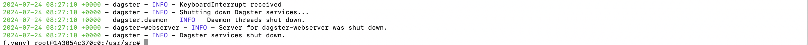

Install Python and Blast+ using your package manager of choice, or by downloading an installer appropriate for your system from python.org and from the NCBI respectively.
The Python package manager pip is installed by default with Python, however you may need to upgrade pip to the latest version:
pipinstall--upgradepip
Install synphage
synphageis available as a Python package and can be install with the Python package manager pip in an opened terminal window.
# Latest
pipinstallsynphage
This will automatically install compatible versions of all Python dependencies.
# Latest
python-mpipinstallsynphage
This will automatically install compatible versions of all Python dependencies.
Step-by-step installation of synphage in Windows Linux Subsystem:
# Install all build python dependencies
sudoaptinstallbuild-essentialzlib1g-devlibncurses5-devlibgdm-devlibnss3-devlibss1-devlibsqlite3-devlibreadline-devlibffi-devcurllibbz2-dev
# Get the install package for python
wgethttps://www.python.org/ftp/python/3.11.9/Python-3.11.9.tgz
# Unpack the tarball file
tar-zxvfPython-3.11.9.tgz
# Build PythoncdPython-3.11.9/
./configure--enable-optimizations# (video: 2:39-3:22)
make-j2# (video: 3:27-7:44)
sudomakeinstall# (video: 8:05-8:25)#Test Python Install
python3.11-V
# Python installedcd..
# Install dependencies
sudoaptinstalllibcairo2-devpkg-configpython3-dev
# Create project folder
mkdir-p~/synphage_home
cd~/synphage_home
# Create python environment
python3.11-mvenv.venv
source./.venv/bin/activate
# Install synphage
pipinstallsynphage
# Install the Blast+ dependency
sudoaptinstallncbi-blast+
# Run synphage
mkdir/dagster_home
DAGSTER_HOME=$PWD/dagster_homedagsterdev-h0.0.0.0-p3000-msynphage
Run synphage
Environment variables
synphage uses the following environment variables:
- INPUT_DIR : for specifying the path to the folder containing the user's GenBank files. If not set, this path will be defaulted to the temp folder. This path can also be modified at run time.
- OUTPUT_DIR: for specifying the path to the folder where the data generated during the run will be stored. If not set, this path will be defaulted to the temp folder.
- EMAIL (optional): for connecting to the NCBI database.
- API_KEY (optional): for connecting to the NCBI database and download files.
- DAGSTER_HOME (optional): for storing metadata generated during former run of the pipeline
Optional env
EMAIL and API_KEY are only required for connecting to the NCBI database and downloading GenBank files. If the user only works with local data, these two variables can be ignored.
DAGSTER_HOME is only necessary to keep track of the previous runs and generated metadata. Does not impair data storage if not set.
Setting your env
These variables can be set with a .env file located in your working directory (Dagster will automatically load them from the .env file when initialising the pipeline) or can be passed in the terminal before starting to run synphage:
The input data are the GenBank files located in the INPUT_DIR. However paths to other data location can be passed at run time for loading data from another directory.
Warning
Only a single path can be configured per loading job run.
The use of special characters in file names, might causes errors downstream.
GenBank file extensions
.gband .gbk are both valid extension for genbank files
Data Output
All output data are located in the OUTPUT_DIR set by the user.
This directory can be reused in future runs if the user needs to process additional sequences or simply generate additional synteny diagrams.
Warning
If no output directory is set, the data folder will be the temporary folder by default.
Be aware that the naming convention for the temporary folder (temp/, tmp/, ...) depends on your system.
Tip
The current data directory can be checked in the config panel of the jobs.
Start synphage via dagster web-based interface
To start synphage run the following command:
dagsterdev-h0.0.0.0-p3000-msynphage
Tip
As synphage uses dagster-webserver, -h and -p flags are required to visualise the pipeline in your browser:
-h : Host to use for the Dagster webserver
-p : Port to use for the Dagster webserver
To access the webserver, follow the link displayed in your terminal or copy/paste it in your web-browser. In this example:
http://0.0.0.0:3000
Dagster running from the terminal and link to the webserver
Stop synphage
After completing your work, you can close the web-browser and stop the process running in the terminal with Ctrl+C .

Dagster shutting down
Via synphage docker image
Requirements
The following dependency needs to be installed in order to run synphage Docker Image on your system.
Setting the port is required to run synphage as it uses a web-interface.
3000 is given as example, any other available port can be used.
Warning
Make sure that the port is available and not already in use (by another running container for example).
Set the Volumes
Data Output
All output data are located in the /data directory of the container.
The output data can be copied after the run from the /data folder or they can be stored in a Docker Volume that can be mounted to a new Docker Container and reused in subsequent runs if the user needs to process additional sequences or simply generate additional synteny diagrams.
Create a Docker Volume for your dataMount your volume to the docker data volume when starting your container
Download the data from the container to you computer
Dagster home
Metadata generated during the successive runs of the pipeline are stored in /dagster directory.
Setting a DAGSTER_HOME Volume is only necessary to keep track of the previous runs and generated metadata. It does not impair data storage if not set.
Danger
All the data will be deleted when the container will be removed.
If no Volume is mounted to the /data directory and the user do not save the data, data will be lost.
Set the environment variables (optional) synphage uses the following environment variables:
EMAIL (optional): for connecting to the NCBI database.
API_KEY (optional): for connecting to the NCBI database and download files.
DAGSTER_HOME (optional): for storing metadata generated during former run of the pipeline
Info
EMAIL and API_KEY are only required for connecting to the NCBI database and downloading GenBank files. If the user only works with local data, these two variables can be ignored.
Press the Run button
Your container is now running.
Import local GenBank files (optional) /user_files is the directory that received users' GenBank files.
For using locally stored GenBank files, the files can be imported or dragged and dropped (depending on your system) into the /user_files directory.
Warning
The use of special characters in file names, might causes errors downstream.
Note
.gband .gbk are both valid extension for genbank files
Connect to the web interface
To connect to the web-interface, select the link to the port or copy this link to your web-browser.
Stop and remove your container
After completing your work, you can close the web-browser and stop the container. After stopping your container a good practice is to remove it.
Stop the containerRemove the container
Environment variables
synphage uses the following environment variables:
- EMAIL (optional): for connecting to the NCBI database.
- API_KEY (optional): for connecting to the NCBI database and download files.
Info
EMAIL and API_KEY are only required for connecting to the NCBI database and downloading GenBank files. If the user only works with local data, these two variables can be ignored.
Tip
These variables can be passed in the terminal before starting to run synphage:
The <tag> corresponds to the <tag> of the downloaded image.
Tip
As synphage uses dagster-webserver, -p flag is required to visualise the pipeline in your browser:
-p : [host_port:container_port]
The container_port is fixed to 3000.
To access the webserver, follow the link displayed in your browser or copy/paste it in your web-browser. In this example:
http://0.0.0.0:3000
Tip
It is good practice to name your containers to find them easily: --name
It is also good practice to remove the container at the end of the run. By passing the --rm flag, the container will be automatically removed after being stopped.
Set the Volumes
Data Output
All output data are located in the /data directory of the container.
The output data can be copied after the run from the /data folder or they can be stored in a Docker Volume that can be mounted to a new Docker Container and reused in subsequent run if the user needs to process additional sequences or simply generate additional synteny diagrams.
# Create volume synphage_data
dockervolumecreatesynphage_data
# Mount the volume to the /data directory in the container
dockerrun-d--rm--namemy_phage_box-vsynphage_data:/data-p3000:3000vestalisvirginis/synphage:<tag>
Dagster home
Metadata generated during the successive runs of the pipeline are stored in /dagster directory.
Setting a DAGSTER_HOME Volume is only necessary to keep track of the previous runs and generated metadata. It does not impair data storage if not set.
# Create volume synphage_data
dockervolumecreatesynphage_data
dockervolumecreatedagster_home
# Mount the volume to the /data directory in the container
dockerrun-d--rm--namemy_phage_box-vsynphage_data:/data-vdagster_home:/dagster-p3000:3000vestalisvirginis/synphage:<tag>
Danger
All the data will be deleted when the container will be removed.
If no Volume is mounted to the /data directory and the user do not save the data, data will be lost.
Warning
Volume names must be unique. You canot set two volumes wit the same name.
Import local GenBank files (optional) /user_files is the directory that received users GenBank files.
For using locally stored GenBank files, the files can be copied into the /user_files directory.